1215–1228
The coming of Sukaphaa
1228–1497
In 1215 the Tai prince Sukaphaa left Mong Mao with nine thousand followers, priests and two elephants. Thirteen years later he crossed the Patkai hills and came down into Namrup.
He made the Moran and Barahi chiefs his kin by marriage rather than his enemies, set the Burhagohain and Borgohain beside the throne, and in 1253 founded Charaideo, where Ahom kings would lie in their moidams for six centuries. Through three interregnums and a lost prince raised in a Brahmin home, the line held.
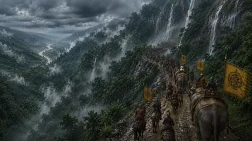
1228
Crossing the Patkai Hills
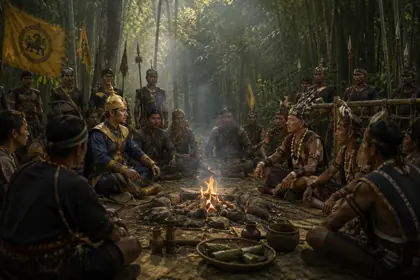
1228–1230
Negotiation and Settlement with Naga Chiefs
1228
First View of the Brahmaputra Valley
1228
Sukaphaa Enters the Assam Valley
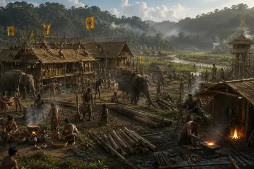
1228–1235
Establishment of the First Tai Settlements
c. 1260s
The Sacred Promontory of Charaideo
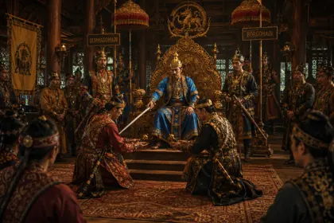
c. 1230–1253
Institution of the Supreme Offices of Burhagohain and Borgohain
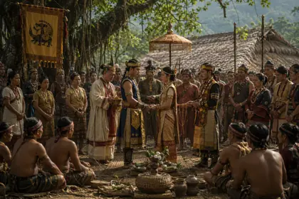
1235–1240
Matrimonial Alliances with Borahi and Moran Rulers
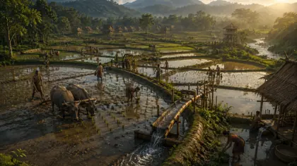
c. 1240–1250
Introduction of Advanced Wet-Rice Cultivation (Sali Kheti)
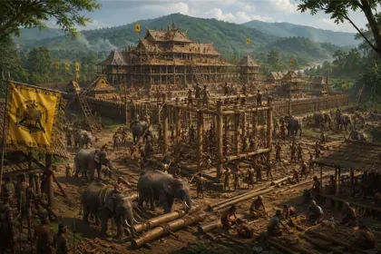
1253
Founding and Construction of the Sacred Capital at Charaideo
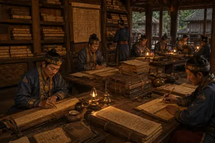
c. 1253–1268
Writing of the First Ahom Buranji (Royal Chronicles)
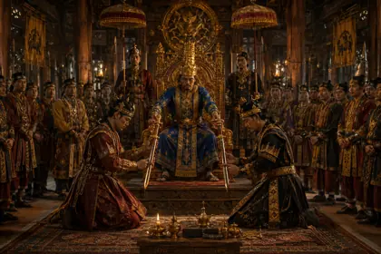
c. 1255
The Royal Court of Sukaphaa
1268 onwards
Institution of Royal Moidams (Pyramidal Earth Tumuli)
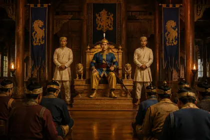
1268
Accession and Court Assembly of Suteuphaa
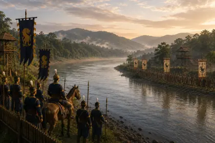
c. 1270
Frontier Standoff on the Dikhou River
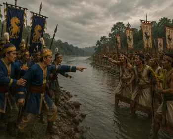
c. 1272
Skirmishes on the Ahom-Kachari Frontier
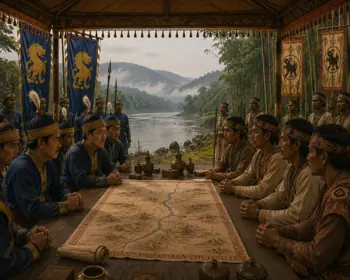
c. 1275
Diplomatic Negotiations with the Kachari King
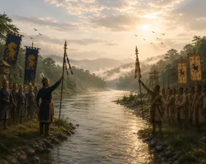
c. 1275
Demarcation of the Dikhou River Boundary
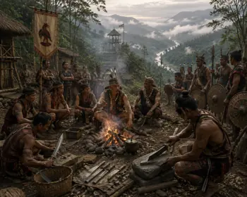
c. 1277
Conspiracy of the Eastern Naga Clans
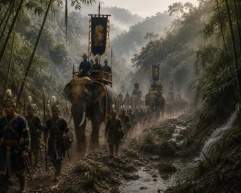
c. 1278
Suteuphaa Marshals the Royal Army
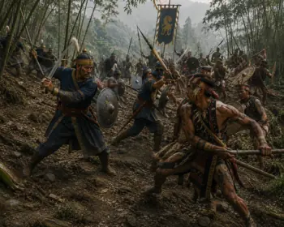
c. 1278
The Fierce Battle of the Naga Hills
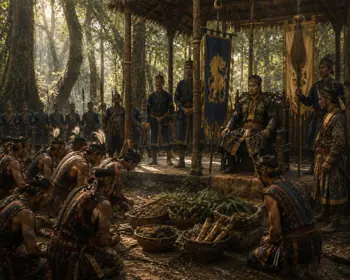
c. 1279
Naga Submission and Tribute Offering
c. 1280
Consolidation of the Dikhou Frontier
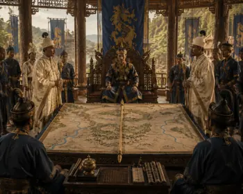
c. 1282
Administrative Division of the Realm
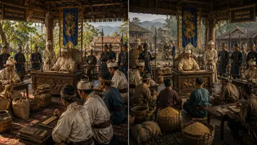
c. 1283
Dual Provincial Governance by Gohains
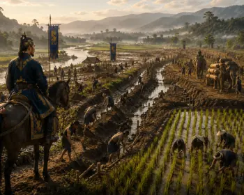
c. 1285
Large-scale Swamp Reclamation and Bunding
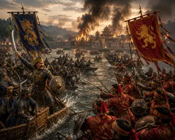
c. 1305
Frontier Battle with Kamata Forces
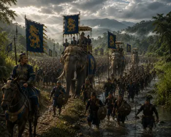
c. 1305
Outbreak of the First Ahom-Kamata War
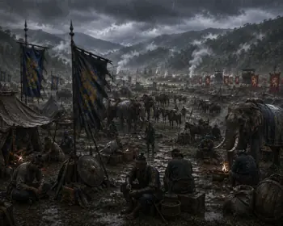
c. 1306–1307
Military Stalemate in the Kamata Campaign

c. 1308
Ahom-Kamata Royal Matrimonial Treaty

c. 1310
Birth of Prince Chao Pulai
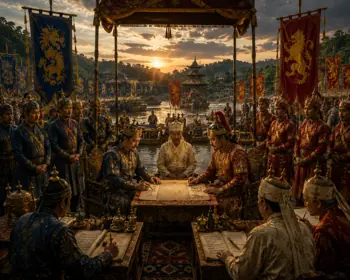
c. 1335
Chao Pulai's Revolt and Alliance with Kamata
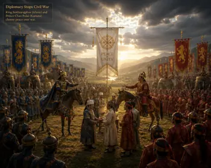
c. 1338
Fraternal Reconciliation Between Sukhrangphaa and Chao Pulai
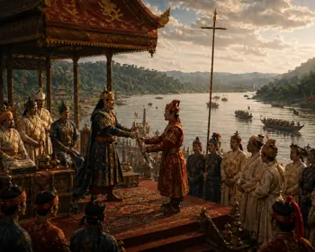
c. 1339
Appointment of Chao Pulai as Governor of Sadiya
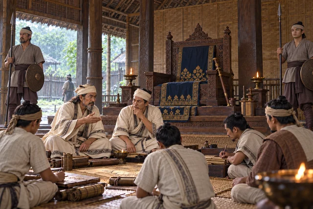
1364–1369
Interregnum After the Death of Sukhrangphaa
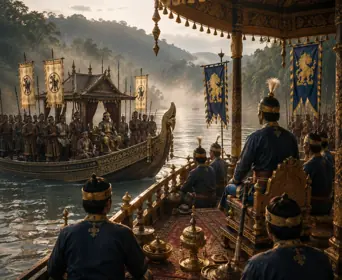
1376
Safrai River Diplomatic Peace Summit
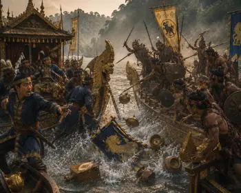
1376
Betrayal and Assassination of King Sutuphaa
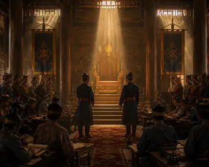
1376–1380
First Ministerial Interregnum
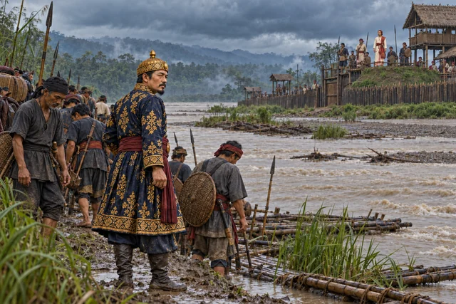
1380–1387
Tyao Khamti's Failed Expedition Against the Chutias
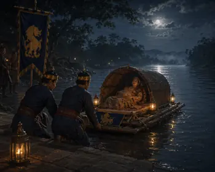
c. 1388
Banishment of the Pregnant Younger Queen

1388
Birth of Prince Sudang in Habung Village
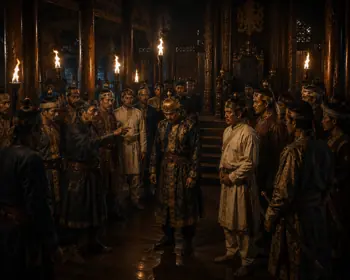
1389
Assassination of King Tyao Khamti
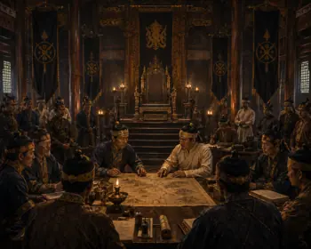
1389–1397
Second Ministerial Interregnum

c. 1390–1397
Prince Sudang Raised in Brahmin Household

1396–1400
Kamata and the Ahoms Drive Back Azam Shah

1397
Sudangphaa Identity Confirmation

1397
Ministers Discover the Hidden Prince Sudang at Habung

1397
Triumphant Royal Return of Sudang to Charaideo

1397
Coronation of Sudangphaa

1397–1407
The Reign of Bamuni Konwar

c. 1398
Institution of the Singari-Gharutha Coronation

c. 1398–1400
The Feast Trap for the Tipam Conspirators

c. 1400
Harmonious Synthesis of Tai and Hindu Vedic Rituals

c. 1401
Matrimonial Alliance with Bhuyan Chieftains

c. 1401
Sudangphaa Repels the Mong Kawng Invasion

1401
Treaty of the Patkai Boundary at Nongnyang Lake

c. 1401–1407
Nangchukham Borgohain Marches on Kamata

c. 1403
Administrative Centralization at Charagua

c. 1405
Cultural Renaissance and Literary Patronage
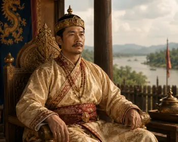
1407–1422
Peaceful Reign of Sujanphaa
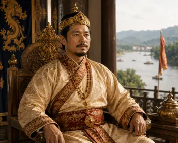
1422–1439
Consolidation Under Suphakphaa
1439–1488
The Golden Forty-Nine-Year Peace of Susenphaa
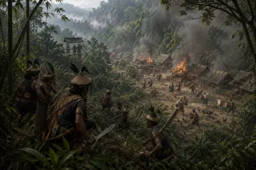
c. 1460
Tangshu Naga Raids on Lowland Settlements
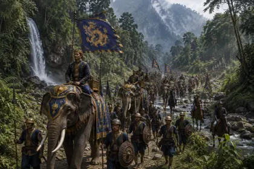
c. 1461
Susenphaa's Punitive Tangshu Campaign
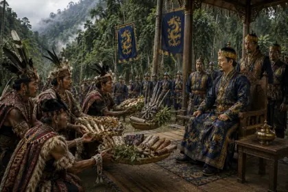
c. 1462
Submission and Tribute of the Tangshu Chiefs
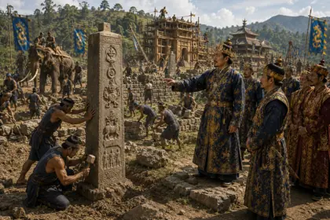
c. 1470
Erection of Charaideo Boundary Stones

1490
The Battle of Turung Against the Kacharis

1491
Peace Settlement with the Kacharis

1492
Tangshu Ambush of Borgohain Khenphung

1493
Suhenphaa's Inspection of Palace Works

1493
Assassination of King Suhenphaa
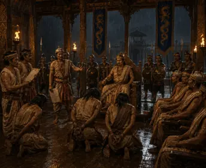
1493
Royal Inquest and Execution of Suhenphaa's Assassins
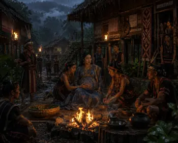
c. 1494
Supimphaa Exiles Pregnant Queen to the Nagas
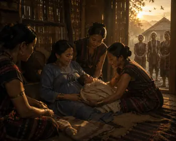
c. 1495